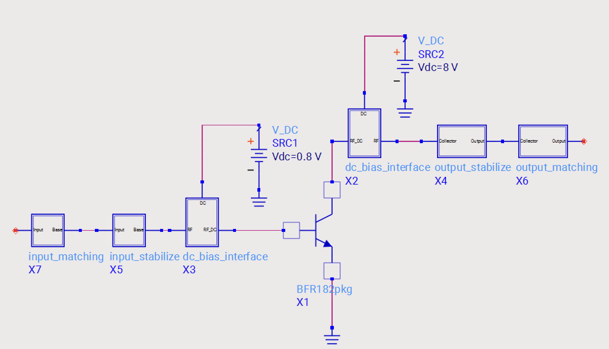
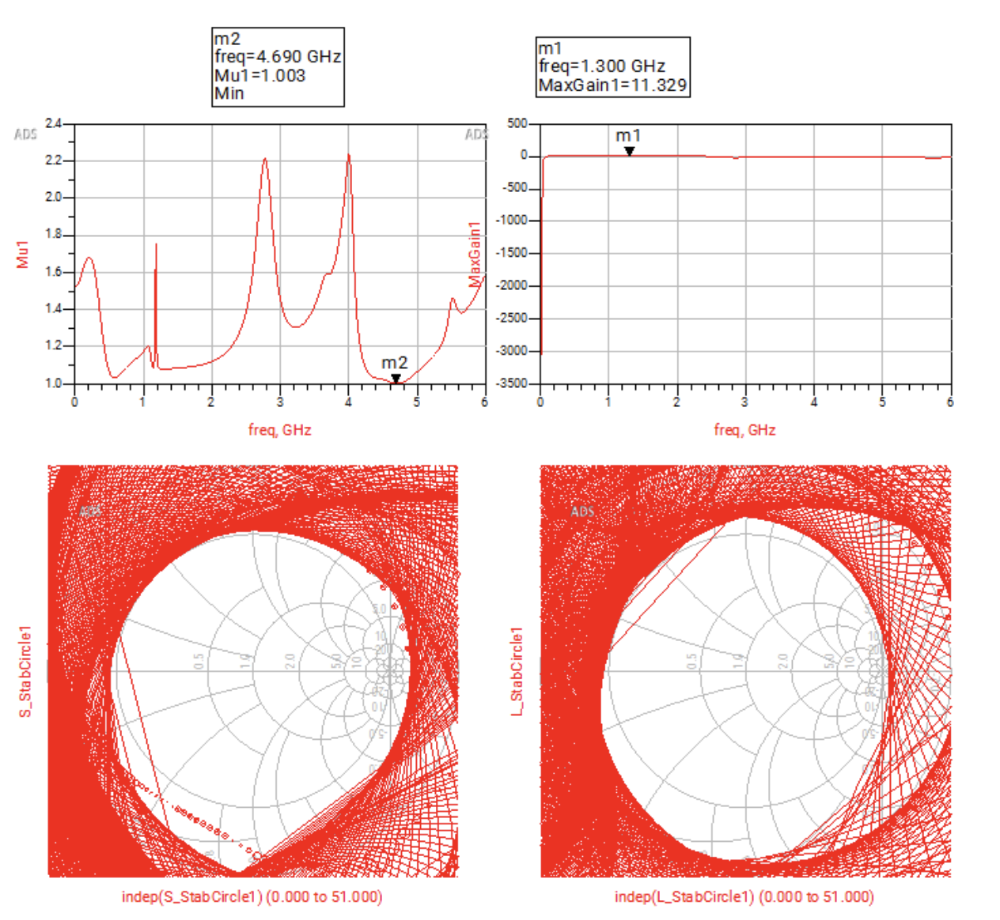
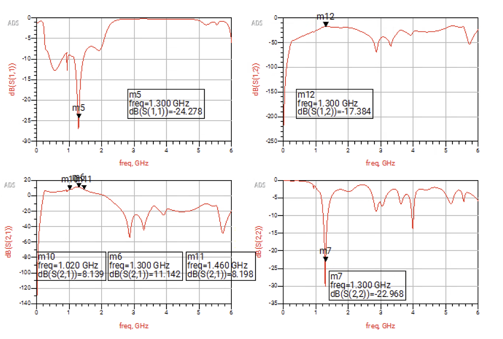

A single-stage microwave amplifier designed for operation at 1.3 GHz using a BFR182 transistor and Keysight ADS. The design combines lumped biasing components with distributed microstrip matching networks to achieve the required gain, impedance matching, and stability.
Stability networks and electromagnetic/circuit co-simulation were used to evaluate the final design and account for distributed transmission-line behavior.
Initial amplifier topology showing the transistor, bias network, stability components, and input/output matching structure.

Microwave amplifier topology in Keysight ADS.
Distributed microstrip transmission lines and lumped components were used to transform the source and load impedances for operation at 1.3 GHz.
Input and output matching networks at the design frequency.
Stability networks were incorporated to achieve unconditional stability while maintaining useful amplifier gain across the operating band.

Stability analysis of the microwave amplifier.
Momentum electromagnetic simulation was combined with circuit simulation to evaluate the effects of the distributed microstrip structures in the amplifier.

Momentum EM and circuit co-simulation.
The final design was evaluated using S-parameters, gain, and stability across the operating frequency range.

Final simulated amplifier performance.
Design Conditions: BFR182 • VCE = 8.0 V • IC = 10 mA • f = 1.3 GHz
Tools: Keysight ADS, Momentum
Skills: Microwave amplifier design, S-parameter analysis, impedance matching, microstrip design, stability analysis, RF simulation, and EM/circuit co-simulation.
EE Portfolio • Department of Electrical and Computer Engineering • Iowa State University